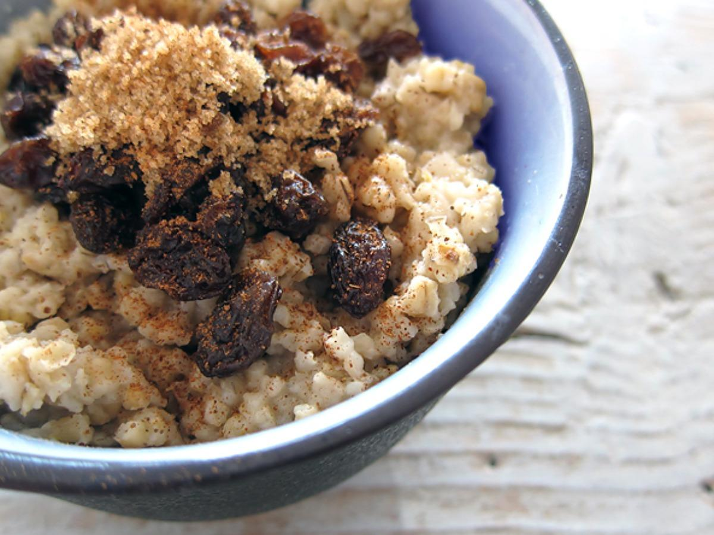

Oatmeal

Description
The breakfast of champions. Oatmeal is one of the most versatile meals out there. It's
super customizable, filling, and most of all, healthy. Here I will break down the minimum
ingredients required to make this easy, delectable meal
Ingredients
- Oatmeal
- Elite, crisp spring water
- A dash of hawaiian salt
- Cinnamon
- Brown Sugar
- Raisins
Steps
- Add water and salt to pot
- Bring water to a boil
- Pour oatmeal into pot and turn heat down to medium
- Stir oatmeal periodically over a 3 minute interval
- Turn off fire and add the cinammon, brown sugar, and raisins